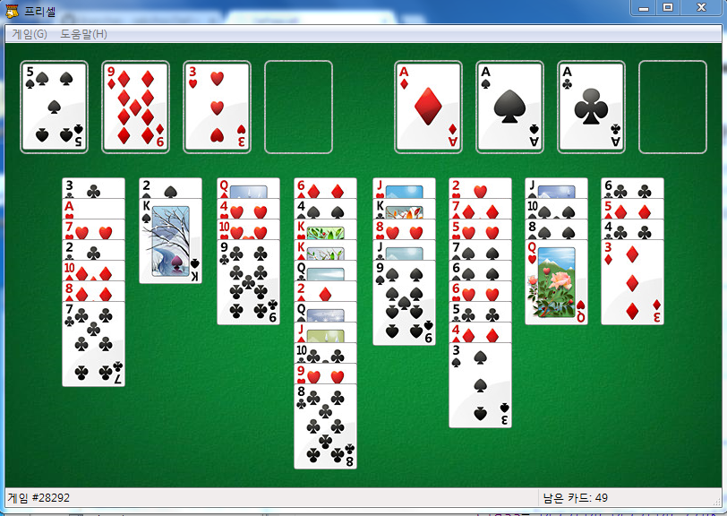
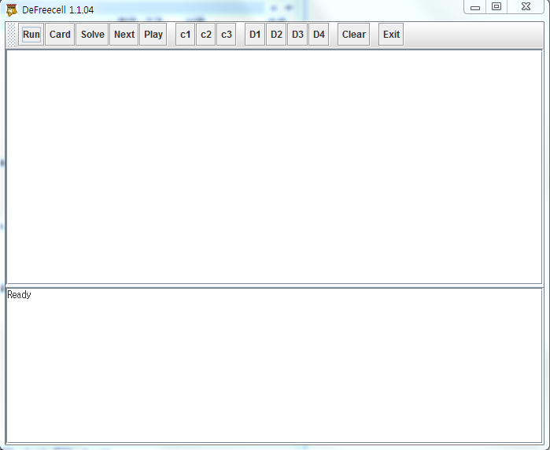

Welcome to DeFreecell Pages.
그동안 어려웠던 프리셀의 카드게임!
카드를 인식하여 해답을 찾고 풀어준다
게임방법

1. Run 클릭 프리셀을 실행!!
2. card 클릭하여 카드인식
3. D1~D4 해답을 찾는 속도 조절
4. solve 클릭하여 해답을 찾는다
5. 해답을 R0~R5까지 절반이상 찾으면 게임 해답찾기 종료
또는 1분이상 지속시 자동종료(시간은 조절가능)
6. Play 클릭 자동으로 게임을 진행(콘솔안에서 마우스를 꺼내면 게임중지)
7. 게임종료시 Next 클릭하면 다음 게임진행
(c1~c2 난이도 선택가능)